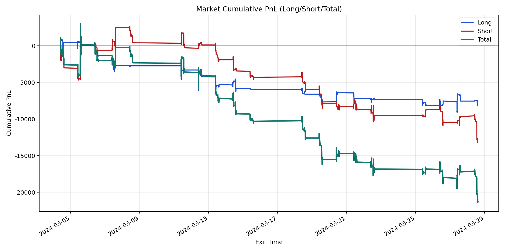
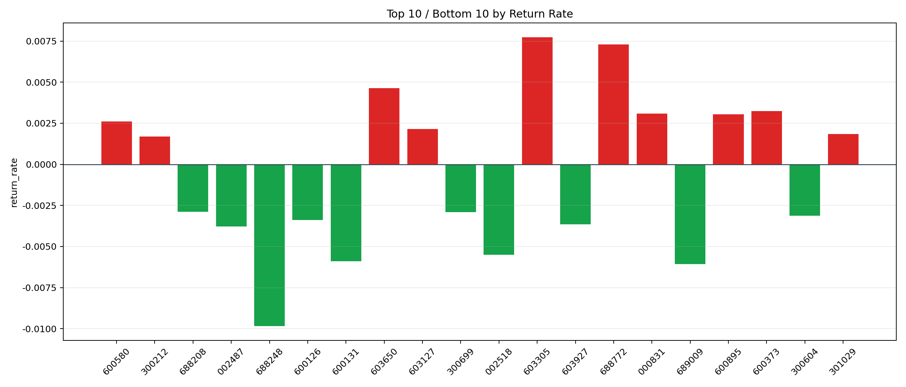

| repo_root | /home/haoranyou/data/output/alpha0.4_1w_5s_3ticks_index_filter/index_weights_500 |
|---|---|
| period_months | 1 |
| period_label | 2024-03-04_to_2024-03-28 |
| start_time | 2024-03-04 09:50:12 |
| end_time | 2024-03-28 14:44:17 |
| n_trades | 5321 |
| n_symbols | 72 |
| total_pnl | -21258.680900000007 |
| long_total_pnl | -8053.181800000004 |
| short_total_pnl | -13205.4991 |
| total_entry_notional | 49441438.0 |
| long_entry_notional | 19865104.0 |
| short_entry_notional | 29576334.0 |
| total_return_rate | -0.00042997699419664953 |
| long_return_rate | -0.000405393387318788 |
| short_return_rate | -0.00044648870613917197 |
| top_symbols_by_return | ["603305", "688772", "603650", "600373", "000831", "600895", "600580", "603127", "301029", "300212"] |
| bottom_symbols_by_return | ["688248", "689009", "600131", "002518", "002487", "603927", "600126", "300604", "300699", "688208"] |

